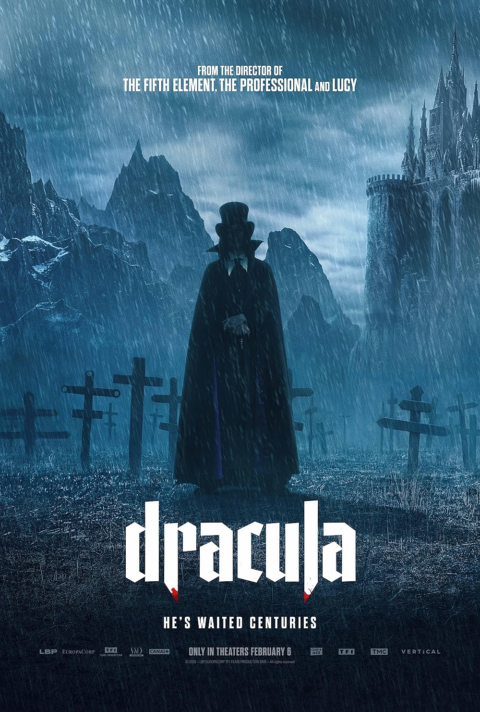
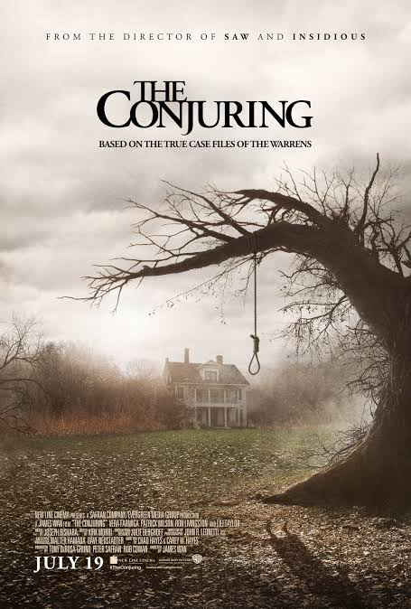
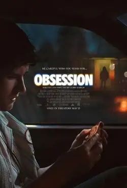
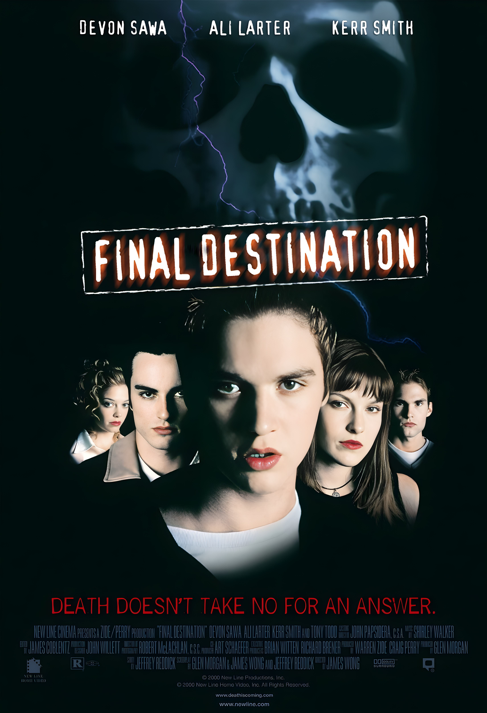
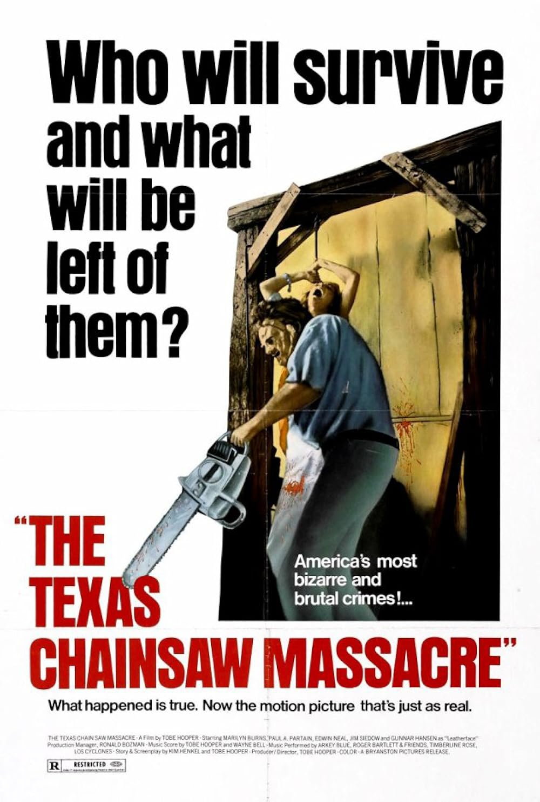

Üdvözöl a Graveyard Cinema!
Merülj el a horrorfilmek világában, ahol a félelem, a feszültség és a borzongás kerül a középpontba. Fedezd fel a műfaj klasszikusait, a véres slasher filmeket, a természetfeletti történeteket és a pszichológiai thrillereket. Akár egy új filmet keresel a következő horrorestédhez, akár csak szeretnél jobban megismerkedni a műfajjal, itt megtalálod a neked való filmeket.
Ismerd meg a horror sötétebb oldalát!


Dracula: A Love Tale
Megjelenés dátuma: 2025
Gótikus horror / romantikus fantasy
Rendező: Luc Besson



